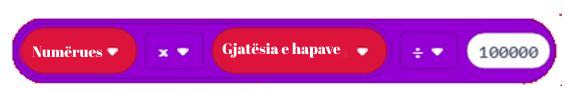

<!DOCTYPE html>
<html xmlns="http://www.w3.org/1999/xhtml" lang="en"></html>
  <head>
    <meta charset="utf-8" />
    <meta name="viewport" content="width=device-width, initial-scale=1.0" />
<title>Час 10 - Аритметичке операције и променљиве &#8212; Programimi i një pajisje Micro:bit në MakeCode </title>
    <link rel="stylesheet" href="_static/pygments.css" type="text/css" />
    <link rel="stylesheet" href="_static/basic.css" type="text/css" />
    <link rel="stylesheet" type="text/css" href="_static/activecode.css" />
    <link rel="stylesheet" type="text/css" href="_static/codemirror.css" />
    <link rel="stylesheet" type="text/css" href="_static/clickable.css" />
    <link rel="stylesheet" type="text/css" href="_static/pytutor.css" />
    <link rel="stylesheet" type="text/css" href="_static/modal-basic.css" />
    <link rel="stylesheet" type="text/css" href="_static/datafile.css" />
    <link rel="stylesheet" type="text/css" href="_static/dragndrop.css" />
    <link rel="stylesheet" type="text/css" href="_static/fitb.css" />
    <link rel="stylesheet" type="text/css" href="_static/matrixeq.css" />
    <link rel="stylesheet" type="text/css" href="_static/parsons.css" />
    <link rel="stylesheet" type="text/css" href="_static/lib/prettify.css" />
    <link rel="stylesheet" type="text/css" href="_static/poll.css" />
    <link rel="stylesheet" type="text/css" href="_static/showEval.css" />
    <link rel="stylesheet" type="text/css" href="_static/tabbedstuff.css" />
    <link rel="stylesheet" type="text/css" href="https://stackpath.bootstrapcdn.com/bootstrap/4.2.1/css/bootstrap.min.css" />
    <link rel="stylesheet" type="text/css" href="_static/video.css" />
    <link rel="stylesheet" type="text/css" href="_static/webgldemo.css" />
    <link rel="stylesheet" type="text/css" href="_static/webglinteractive.css" />
    <link rel="stylesheet" type="text/css" href="_static/karel.css" />
    <link rel="stylesheet" type="text/css" href="_static/notes.css" />
    <link rel="stylesheet" type="text/css" href="_static/simanim.css" />
    <link rel="stylesheet" type="text/css" href="_static/pycode.css" />
    <link rel="stylesheet" type="text/css" href="_static/p5js.css" />
    <link rel="stylesheet" type="text/css" href="_static/gallery.css" />
    <link rel="stylesheet" type="text/css" href="https://stackpath.bootstrapcdn.com/bootstrap/4.2.1/css/bootstrap.min.css" />
    <link rel="stylesheet" type="text/css" href="_static/video.css" />
    <link rel="stylesheet" href="_static/user-highlights.css" type="text/css" />
    <link rel="stylesheet" href="https://use.fontawesome.com/releases/v5.1.1/css/all.css" type="text/css" />
    <link rel="stylesheet" href="_static/bootstrap-4.0.0-dist/css/bootstrap.min.css" type="text/css" />
    <link rel="stylesheet" href="_static/flatly.min.css" type="text/css" />
    <link rel="stylesheet" href="_static/petlja-runestone.css" type="text/css" />
    <script id="documentation_options" data-url_root="./" src="_static/documentation_options.js"></script>
    <script type="text/javascript" src="_static/runestonebase.js"></script>
    <script type="text/javascript" src="_static/jquery.js"></script>
    <script type="text/javascript" src="_static/underscore.js"></script>
    <script type="text/javascript" src="_static/doctools.js"></script>
    <script type="text/javascript" src="_static/language_data.js"></script>
    <script type="text/javascript" src="_static/jquery.highlight.js"></script>
    <script type="text/javascript" src="_static/bookfuncs.js"></script>
    <script type="text/javascript" src="_static/codemirror.js"></script>
    <script type="text/javascript" src="_static/xml.js"></script>
    <script type="text/javascript" src="_static/css.js"></script>
    <script type="text/javascript" src="_static/python.js"></script>
    <script type="text/javascript" src="_static/htmlmixed.js"></script>
    <script type="text/javascript" src="_static/javascript.js"></script>
    <script type="text/javascript" src="_static/jquery_i18n/CLDRPluralRuleParser.js"></script>
    <script type="text/javascript" src="_static/jquery_i18n/jquery.i18n.js"></script>
    <script type="text/javascript" src="_static/jquery_i18n/jquery.i18n.messagestore.js"></script>
    <script type="text/javascript" src="_static/jquery_i18n/jquery.i18n.fallbacks.js"></script>
    <script type="text/javascript" src="_static/jquery_i18n/jquery.i18n.language.js"></script>
    <script type="text/javascript" src="_static/jquery_i18n/jquery.i18n.parser.js"></script>
    <script type="text/javascript" src="_static/jquery_i18n/jquery.i18n.emitter.js"></script>
    <script type="text/javascript" src="_static/jquery_i18n/jquery.i18n.emitter.bidi.js"></script>
    <script type="text/javascript" src="_static/activecode-i18n.en.js"></script>
    <script type="text/javascript" src="_static/skulpt.min.js"></script>
    <script type="text/javascript" src="_static/skulpt-stdlib.js"></script>
    <script type="text/javascript" src="_static/activecode.js"></script>
    <script type="text/javascript" src="_static/clike.js"></script>
    <script type="text/javascript" src="_static/timed_activecode.js"></script>
    <script type="text/javascript" src="_static/animationbase.js"></script>
    <script type="text/javascript" src="_static/mchoice.js"></script>
    <script type="text/javascript" src="_static/timedmc.js"></script>
    <script type="text/javascript" src="_static/timed.js"></script>
    <script type="text/javascript" src="_static/mchoice-i18n.en.js"></script>
    <script type="text/javascript" src="_static/clickable.js"></script>
    <script type="text/javascript" src="_static/timedclickable.js"></script>
    <script type="text/javascript" src="_static/d3.v2.min.js"></script>
    <script type="text/javascript" src="_static/jquery.ba-bbq.min.js"></script>
    <script type="text/javascript" src="_static/jquery.jsPlumb-1.3.10-all-min.js"></script>
    <script type="text/javascript" src="_static/pytutor.js"></script>
    <script type="text/javascript" src="_static/codelens.js"></script>
    <script type="text/javascript" src="_static/datafile.js"></script>
    <script type="text/javascript" src="_static/dragndrop.js"></script>
    <script type="text/javascript" src="_static/timeddnd.js"></script>
    <script type="text/javascript" src="_static/dragndrop-i18n.en.js"></script>
    <script type="text/javascript" src="_static/fitb.js"></script>
    <script type="text/javascript" src="_static/timedfitb.js"></script>
    <script type="text/javascript" src="_static/fitb-i18n.en.js"></script>
    <script type="text/javascript" src="_static/matrixeq.js"></script>
    <script type="text/javascript" src="_static/lib/prettify.js"></script>
    <script type="text/javascript" src="_static/lib/hammer.min.js"></script>
    <script type="text/javascript" src="_static/parsons.js"></script>
    <script type="text/javascript" src="_static/parsons-i18n.en.js"></script>
    <script type="text/javascript" src="_static/timedparsons.js"></script>
    <script type="text/javascript" src="_static/poll.js"></script>
    <script type="text/javascript" src="_static/reveal.js"></script>
    <script type="text/javascript" src="_static/shortanswer.js"></script>
    <script type="text/javascript" src="_static/timed_shortanswer.js"></script>
    <script type="text/javascript" src="_static/showEval.js"></script>
    <script type="text/javascript" src="_static/tabbedstuff.js"></script>
    <script type="text/javascript" src="_static/runestonevideo.js"></script>
    <script type="text/javascript" src="_static/webglinteractive.js"></script>
    <script type="text/javascript" src="_static/FileSaver.min.js"></script>
    <script type="text/javascript" src="_static/Blob.js"></script>
    <script type="text/javascript" src="_static/karelCorner.js"></script>
    <script type="text/javascript" src="_static/karelRobot.js"></script>
    <script type="text/javascript" src="_static/karelWorld.js"></script>
    <script type="text/javascript" src="_static/karelRobotDrawer.js"></script>
    <script type="text/javascript" src="_static/karelUI.js"></script>
    <script type="text/javascript" src="_static/karel.js"></script>
    <script type="text/javascript" src="_static/karel-i18n.en.js"></script>
    <script type="text/javascript" src="_static/notes.js"></script>
    <script type="text/javascript" src="_static/pygamelib-init.js"></script>
    <script type="text/javascript" src="_static/blockly/blockly_compressed.js"></script>
    <script type="text/javascript" src="_static/blockly/blocks_compressed.js"></script>
    <script type="text/javascript" src="_static/blockly/python_compressed.js"></script>
    <script type="text/javascript" src="_static/blockly/msg-sr.js"></script>
    <script type="text/javascript" src="_static/blockpy/utilities.js"></script>
    <script type="text/javascript" src="_static/blockpy/python_errors.js"></script>
    <script type="text/javascript" src="_static/blockpy/ast_node_visitor.js"></script>
    <script type="text/javascript" src="_static/blockpy/abstract_interpreter.js"></script>
    <script type="text/javascript" src="_static/blockpy/pytifa.js"></script>
    <script type="text/javascript" src="_static/blockpy/abstract_interpreter_definitions.js"></script>
    <script type="text/javascript" src="_static/blockpy/python_to_blockly.js"></script>
    <script type="text/javascript" src="_static/blockpy/imported.js"></script>
    <script type="text/javascript" src="_static/blockpy/blocks/class.js"></script>
    <script type="text/javascript" src="_static/blockpy/blocks/comment.js"></script>
    <script type="text/javascript" src="_static/blockpy/blocks/comprehensions.js"></script>
    <script type="text/javascript" src="_static/blockpy/blocks/dict.js"></script>
    <script type="text/javascript" src="_static/blockpy/blocks/if.js"></script>
    <script type="text/javascript" src="_static/blockpy/blocks/io.js"></script>
    <script type="text/javascript" src="_static/blockpy/blocks/lists.js"></script>
    <script type="text/javascript" src="_static/blockpy/blocks/sets.js"></script>
    <script type="text/javascript" src="_static/blockpy/blocks/loops.js"></script>
    <script type="text/javascript" src="_static/blockpy/blocks/parking.js"></script>
    <script type="text/javascript" src="_static/blockpy/blocks/tuple.js"></script>
    <script type="text/javascript" src="_static/blockpy/blocks/turtles.js"></script>
    <script type="text/javascript" src="_static/blockpy/blocks/text.js"></script>
    <script type="text/javascript" src="_static/blockpy-modal.js"></script>
    <script type="text/javascript" src="_static/simanim.js"></script>
    <script type="text/javascript" src="https://cdn.jsdelivr.net/pyodide/v0.16.1/full/pyodide.js"></script>
    <script type="text/javascript" src="_static/pycode.js"></script>
    <script type="text/javascript" src="//toolness.github.io/p5.js-widget/p5-widget.js"></script>
    <script type="text/javascript" src="_static/p5js.js"></script>
    <script type="text/javascript" src="_static/gallery.js"></script>
    <script type="text/javascript" src="_static/petljavideo.js"></script>
    <script type="text/javascript" src="_static/mchoice-i18n.sr-Cyrl.js"></script>
    <script type="text/javascript" src="_static/mchoice-i18n.sr.js"></script>
    <script type="text/javascript" src="_static/mchoice-i18n.sr-Latn.js"></script>
    <script type="text/javascript" src="_static/dragndrop-i18n.sr-Cyrl.js"></script>
    <script type="text/javascript" src="_static/dragndrop-i18n.sr.js"></script>
    <script type="text/javascript" src="_static/dragndrop-i18n.sr-Latn.js"></script>
    <script type="text/javascript" src="_static/fitb-i18n.sr-Cyrl.js"></script>
    <script type="text/javascript" src="_static/fitb-i18n.sr.js"></script>
    <script type="text/javascript" src="_static/fitb-i18n.sr-Latn.js"></script>
    <script type="text/javascript" src="_static/parsons-i18n.sr-Cyrl.js"></script>
    <script type="text/javascript" src="_static/parsons-i18n.sr.js"></script>
    <script type="text/javascript" src="_static/parsons-i18n.sr-Latn.js"></script>
    <script type="text/javascript" src="_static/activecode-i18n.sr-Cyrl.js"></script>
    <script type="text/javascript" src="_static/activecode-i18n.sr.js"></script>
    <script type="text/javascript" src="_static/activecode-i18n.sr-Latn.js"></script>
    <script type="text/javascript" src="_static/jquery-ui-1.10.3.custom.min.js"></script>
    <script type="text/javascript" src="_static/jquery-fix.js"></script>
    <script type="text/javascript" src="_static/bootstrap-4.0.0-dist/js/bootstrap.min.js"></script>
    <script type="text/javascript" src="_static/bootstrap-4.0.0-dist/js/bootstrap.bundle.min.js"></script>
    <script type="text/javascript" src="_static/bootstrap-sphinx.js"></script>
    <script type="text/javascript" src="_static/waypoints.min.js"></script>
    <script type="text/javascript" src="_static/rangy-core.js"></script>
    <script type="text/javascript" src="_static/rangy-textrange.js"></script>
    <script type="text/javascript" src="_static/rangy-cssclassapplier.js"></script>
    <script type="text/javascript" src="_static/user-highlights.js"></script>
    <script type="text/javascript" src="_static/jquery.idle-timer.js"></script>
    <script type="text/javascript" src="_static/processing-1.4.1.min.js"></script>
    <script type="text/javascript" src="_static/jquery.hotkey.js"></script>
    <script type="text/javascript" src="_static/jquery-migrate-1.2.1.min.js"></script>
    <link rel="index" title="Index" href="genindex.html" />
    <link rel="search" title="Search" href="search.html" />
<meta charset='utf-8'>
<meta http-equiv='X-UA-Compatible' content='IE=edge,chrome=1'>
<meta content='width=device-width, initial-scale=1.0, maximum-scale=1.0, user-scalable=0' name='viewport' />
<link rel="shortcut icon" href="_static/favicon.ico" type="image/ico" />

<script type="text/javascript">
  eBookConfig = {};
  eBookConfig.host = 'http://127.0.0.1:8000' ? 'http://127.0.0.1:8000' : 'http://127.0.0.1:8000';
  eBookConfig.app = eBookConfig.host + '/runestone';
  eBookConfig.ajaxURL = eBookConfig.app + '/ajax/';
  eBookConfig.course = 'Programimi i një pajisje Micro:bit në MakeCode ';
  eBookConfig.logLevel = '0';
  eBookConfig.loginRequired = 'false';
  eBookConfig.build_info = "";
  eBookConfig.isLoggedIn = false;
  eBookConfig.useRunestoneServices = 'false';
  eBookConfig.python3 = 'true';
  eBookConfig.basecourse = 'Programimi i një pajisje Micro:bit në MakeCode ';
  eBookConfig.runestone_version = '';
  eBookConfig.imagesDir = '_images/';
  eBookConfig.staticDir = '_static/';
  if(typeof(Sk) != "undefined")
      Sk.imgPath = eBookConfig.imagesDir;
</script>

<div id="fb-root"></div>


  </head><body>


<!-- Begin navbar -->

<nav id="navbar" class="navbar navbar-default navbar-fixed-top" role="navigation">

  <div class="container">

    <div class="navbar-header">
      <button type="button" class="navbar-toggle collapsed" data-toggle="collapse" data-target="#bs-example-navbar-collapse-1">
        <span class="sr-only">Toggle navigation</span>
        <span class="icon-bar"></span>
        <span class="icon-bar"></span>
        <span class="icon-bar"></span>
      </button>
      
    </div>

    <div class="collapse navbar-collapse" id="bs-example-navbar-collapse-1" style="margin-top: 10px; margin-left: 25px;">
      <ul class="nav navbar-nav">
        <li class="active"><a href="./">Programimi i një pajisje Micro:bit në MakeCode </a></li>
      </ul>
    </div>
  </div>
</nav>


<div class="container col-md-12" id="continue-reading"></div>

<div class="container col-md-8 col-md-offset-2" id="main-content" style="margin-top: 70px;">
  
  <div class="section" id="id1">
<h1>Час 10 - Аритметичке операције и променљиве<a class="headerlink" href="#id1" title="Permalink to this headline">¶</a></h1>
<p>На овом часу говорићемо о: ­</p>
<ul class="simple">
<li><p>­чување међурезултата;</p></li>
<li><p>креирање променљивих;</p></li>
<li><p>аритметичке операције и рачунања у МејкКоду;</p></li>
<li><p>целобројном дељењу и додатним математичким операцијама.</p></li>
</ul>
<p>Приликом прављења педометра (уређаја који броји (рачуна) кораке препознајући покрете које је корисник направио) важно да имамо информацију о броју корака које је корисник направио, како бисмо знали колико је растојање пређено.</p>
<p>Било би добро да програм, у сваком тренутку, приказује број остварених корака. А, да кликом на дугме А, приказује колико је пређено километара.</p>
<p><strong>Фаза 1</strong></p>
<p><strong>Разумевање проблема:</strong></p>
<dl>
<dt>Свако кретање корисника мора да буде забележено. За одређивање пређеног растојања у километрима дефинишемо дужину корака, нпр. 50 cm, коју претварамо у km (у нашем примеру 50cm=0.0005km) и множимо са бројем корака.</dt><dd><p><strong>Корак 1:</strong> Број корака на почетку је нула.</p>
<p><strong>Корак 2:</strong> Сваки пут када се направи покрет (кретање) вредност бројача корака се увећава за један.</p>
<p><strong>Корак 3:</strong> Приказује се број тренутно остварених корака.</p>
<p><strong>Корак 4:</strong> Када корисник кликне на дугме А: приказује се број пређених километара на основу броја корака (множи се дужина корака са бројем корака).</p>
</dd>
</dl>
<p><strong>Фаза 2</strong></p>
<p>Покрени МејкКод за одабир и слагање блокова у простор за програмирање.</p>
<p>На интернет страници на адреси <a class="reference external" href="https://makecode.microbit.org">https://makecode.microbit.org</a> покрени нов пројекат кликом на дугме New Project <a class="reference internal" href="_images/86.png"></a>.</p>
<p>Да би захтев о пређеној километражи на основу броја корака могао да буде испуњен, морамо да пронађемо начин да чувамо и по потреби мењамо вредност бројача корака. Решење за овај проблем јесте увођење <strong>променљиве</strong>. Променљиву можеш да схватиш као простор у меморији рачунара, сличан кутији, у коме се, за време извршавања програма, чувају неке међувредности. Променљиве имају своја имена. Када у програму желиш да користиш вредност променљиве, довољно је да наведеш њено име.</p>
<p>Променљиву креирамо тако што, у категорији <em>Variables</em> (1), кликнемо на дугме <em>Make a variable</em> (Направи променљиву) (2) и у поље уносимо име променљиве (3), у нашем случају <strong>Brojac</strong>. Кликом на дугме ОК (4), креирана је променљива (5).</p>
<a class="reference internal image-reference" href="_images/179.png"></a>
<p>Постављамо да је почетна вредност променљиве <strong>Brojac</strong> постављена на нулу. То је могуће урадити превлачењем блока set Brojac to 0 из категорије <em>Variables</em> у блок <em>on start</em>.</p>
<a class="reference internal image-reference" href="_images/180.png"></a>
<p>Поред променљиве Brojac корака дефинисаћемо променљиву <strong>DuzinaKoraka</strong>, чија је вредност постављена на 50cm.</p>
<a class="reference internal image-reference" href="_images/181.png"></a>
<p>Промена броја корака дешава се сваки пут када корисник направи неки покрет. Другим речима, вредност променљивом <strong>Brojac</strong> ће се увећавати за један сваки пут када се направи покрет.</p>
<p>То ћемо постићи коришћењем блока <em>on shake</em>, у оквиру кога упацујемо блок <em>change DuzinaKoraka by 1</em>.</p>
<a class="reference internal image-reference" href="_images/182.png"></a>
<p>Потребно је сваки промену броја корака приказати на екрану микробита, коришћењем блока <em>show number..</em> у пољу за број превлачимо променљиву <strong>Brojac</strong> из категорије <em>Variables</em>.</p>
<a class="reference internal image-reference" href="_images/183.png"></a>
<p><strong>Фаза 3</strong></p>
<p>Тестирање и анализа програма.</p>
<p>Да бисмо тестирали програм имамо две могућности:</p>
<blockquote>
<div><ol class="arabic simple">
<li><p>да га покренемо у симулатору кликом на дугме <a class="reference internal" href="_images/96.png"></a>.</p></li>
<li><p>да га пребацимо на микробит. Да бисмо програм пребацили на микробит треба да га прикачимо на рачунар коришћењем USB кабла. Кликом на дугме <a class="reference internal" href="_images/97.png"></a> преузмите .hex фајл на ваш рачунар. Превлачењем фајла на микробит, уређај је спреман за рад.</p></li>
</ol>
</div></blockquote>
<a class="reference internal image-reference" href="_images/184.png"></a>
<p>Програм за сада ради како треба, када се оствари покрет бројач корака се увећава за један.
Сада је потребно да кликом на дугме А добијемо приказ укупне километраже на основу броја корака.</p>
<p>Километражу (дужина које је пређена) рачунамо тако што број корака помножимо са дефинисаном дужином корака. У нашем случају дужина корака је 50 cm. Да бисмо добили резултат у километрима потребно га је поделити са 100000 (1km=100000cm)</p>
<p>Да бисмо све то постигли користимо рачунске операције попут сабирања, одузимања, множења и дељења. То су операције које непрестано користимо у свакодневном животу. Блокови који омогућавају рачунање називају се <strong>аритметички оператори</strong>. Рачунске операције попут сабирања, одузимања, множења и дељења немају значај само на часовима математике.</p>
<p>Како је програмирање покушај да олакшамо свакодневни живот, у МејкKоду је могуће извршити одређени број рачунских, кажемо и аритметичких, операција.</p>
<p>Блокови који омогућавају рачунање налазе се у категорији <em>Math</em>.</p>
<a class="reference internal image-reference" href="_images/185.png"></a>
<p>Резултат њиховог извршавања је <strong>број</strong>.</p>
<p>Ако желиш да провериш како аритметички оператори за сабирање, одузимање, множење и дељење раде, довољно је да у празна поља блока унесеш бројеве, два пута кликнеш на њега и видиш резултат извршавања.</p>
<a class="reference internal image-reference" href="_images/186.png"></a>
<p>Примећујеш да се рачунска операција множење означава са (*), а дељење са ÷.</p>
<p>Сложеније математичке изразе (оне са заградама) можеш да израчунаваш у МејкКоду.</p>
<p>Аритметички израз: (12 + 32) * (56 - 5) може да изгледа овако:</p>
<a class="reference internal image-reference" href="_images/187.png"></a>
<p>Уради:
У Мејккоду сложи одговарајуће блокове и у празна места упиши резултате њиховог извршавања.</p>

        <div class="course-box course-box-question course-content">
        <div data-component="fillintheblank" id="fitb-exL10P1">
            <p>(25∙25-255)-525:25</p>
<input type="text">
        <script type="application/json">
            [[{"number": [346, 346], "feedback": "<p>\u0422\u0430\u0447\u043d\u043e.</p>\n"}, {"regex": "^ *x *$", "regexFlags": "i", "feedback": "<p>\u041d\u0438\u0458\u0435 \u0442\u0430\u0447\u043d\u043e.</p>\n"}]]
        </script>

        </div>
        </div>
            
        <div class="course-box course-box-question course-content">
        <div data-component="fillintheblank" id="fitb-exL10P2">
            <p>23∙9-10</p>
<input type="text">
        <script type="application/json">
            [[{"number": [197, 197], "feedback": "<p>\u0422\u0430\u0447\u043d\u043e.</p>\n"}, {"regex": "^ *x *$", "regexFlags": "i", "feedback": "<p>\u041d\u0438\u0458\u0435 \u0442\u0430\u0447\u043d\u043e.</p>\n"}]]
        </script>

        </div>
        </div>
            
        <div class="course-box course-box-question course-content">
        <div data-component="fillintheblank" id="fitb-exL10P3">
            <p>27/3+(23∙9-10)</p>
<input type="text">
        <script type="application/json">
            [[{"number": [197, 197], "feedback": "<p>\u0422\u0430\u0447\u043d\u043e.</p>\n"}, {"regex": "^ *x *$", "regexFlags": "i", "feedback": "<p>\u041d\u0438\u0458\u0435 \u0442\u0430\u0447\u043d\u043e.</p>\n"}]]
        </script>

        </div>
        </div>
            
        <div class="course-box course-box-question course-content">
        <div data-component="fillintheblank" id="fitb-exL10P4">
            <p>5∙(27/3+(23∙9-10))</p>
<input type="text">
        <script type="application/json">
            [[{"number": [206, 206], "feedback": "<p>\u0422\u0430\u0447\u043d\u043e.</p>\n"}, {"regex": "^ *x *$", "regexFlags": "i", "feedback": "<p>\u041d\u0438\u0458\u0435 \u0442\u0430\u0447\u043d\u043e.</p>\n"}]]
        </script>

        </div>
        </div>
            
        <div class="course-box course-box-question course-content">
        <div data-component="fillintheblank" id="fitb-exL10P5">
            <p>210+3∙(42+634)</p>
<input type="text">
        <script type="application/json">
            [[{"number": [676, 676], "feedback": "<p>\u0422\u0430\u0447\u043d\u043e.</p>\n"}, {"regex": "^ *x *$", "regexFlags": "i", "feedback": "<p>\u041d\u0438\u0458\u0435 \u0442\u0430\u0447\u043d\u043e.</p>\n"}]]
        </script>

        </div>
        </div>
            
        <div class="course-box course-box-question course-content">
        <div data-component="fillintheblank" id="fitb-exL10P6">
            <p>(618-(312:4+344)):14-13</p>
<input type="text">
        <script type="application/json">
            [[{"number": [1, 1], "feedback": "<p>\u0422\u0430\u0447\u043d\u043e.</p>\n"}, {"regex": "^ *x *$", "regexFlags": "i", "feedback": "<p>\u041d\u0438\u0458\u0435 \u0442\u0430\u0447\u043d\u043e.</p>\n"}]]
        </script>

        </div>
        </div>
            <p>Вредности истих израза израчунај у свесци и упореди са резултатима добијеним у МејкКоду. Ако уочиш грешке, анализирај поступак решавања и исправи их.</p>
<p>Дефинишемо променљиву <em>DuzinaPuta</em> која ће да чува вредност пређеног пута у километрима израчунату помоћу доњег блока.</p>
<a class="reference internal image-reference" href="_images/188.png"></a>
<p>Кликом на дугме А, потребно је применити аритметичке операције којим се израчунава вредност пређене километраже. Уједно приказује се дата вредност на екрану микробита:</p>
<a class="reference internal image-reference" href="_images/189.png"></a>
<p>Коначан изгледа програма:</p>
<a class="reference internal image-reference" href="_images/190.png"></a>
<p>Тестирајмо поново програм. Програм ради као треба.</p>
<p>Поред основних аритметичких оперција, јако корисна рачунска операција је и целобројно дељење. Често се користи у програмирању.</p>
<p>И у Мејккоду можеш да израчунаш остатак при целобројном дељењу. Потребно је да користиш оператор <a class="reference internal" href="_images/191.png"></a>.</p>
<p>Хајде да искористимо овај оператор и направимо програм којим се проверава да ли је измерена вредност нивоа осветљења паран број?</p>
<p><strong>Фаза 1</strong></p>
<p>Размишљање о проблему: Број је паран ако је дељив бројем 2 без остатка.</p>
<p><strong>Фаза 2</strong></p>
<p>Покрени МејкКод за одабир и слагање блокова у простор за програмирање.</p>
<p>На интернет страници на адреси <a class="reference external" href="https://makecode.microbit.org">https://makecode.microbit.org</a> покрени нов пројекат кликом на дугме New Project <a class="reference internal" href="_images/86.png"></a>.</p>
<p>Услов којим проверавамо да ли је ниво осветљења паран број можемо представити блоком:</p>
<a class="reference internal image-reference" href="_images/192.png"></a>
<p>Коначан изглед кода:</p>
<a class="reference internal image-reference" href="_images/193.png"></a>
<p><strong>Фаза 3</strong></p>
<p>Тестирање и анализа програма.</p>
<p>Да бисмо тестирали програм имамо две могућности:</p>
<blockquote>
<div><ol class="arabic simple">
<li><p>да га покренемо у симулатору кликом на дугме <a class="reference internal" href="_images/96.png"></a>.</p></li>
<li><p>да га пребацимо на микробит. Да бисмо програм пребацили на микробит треба да га прикачимо на рачунар коришћењем USB кабла. Кликом на дугме <a class="reference internal" href="_images/97.png"></a> преузмите .hex фајл на ваш рачунар. Превлачењем фајла на микробит, уређај је спреман за рад.</p></li>
</ol>
</div></blockquote>
<p>Поред основих аритметичких операција у категорији <em>Math</em> можемо пронаћи и следеће блокове:</p>
<table class="colwidths-given docutils align-default" id="id3">
<caption><span class="caption-text">Функције у категорији <em>Math</em></span><a class="headerlink" href="#id3" title="Permalink to this table">¶</a></caption>
<colgroup>
<col style="width: 50%" />
<col style="width: 50%" />
</colgroup>
<thead>
<tr class="row-odd"><th class="head"><p>Блок операције</p></th>
<th class="head"><p>Објашњење блока</p></th>
</tr>
</thead>
<tbody>
<tr class="row-even"><td><p><a class="reference internal" href="_images/194.png"></a></p></td>
<td><p>Одређивање минималне вредности бројева из датог интервала.</p></td>
</tr>
<tr class="row-odd"><td><p><a class="reference internal" href="_images/195.png"></a></p></td>
<td><p>Одређивање максималне вредности бројева из датог интервала.</p></td>
</tr>
<tr class="row-even"><td><p><a class="reference internal" href="_images/196.png"></a></p></td>
<td><p>Апсолутна вредност броја.</p></td>
</tr>
<tr class="row-odd"><td><p><a class="reference internal" href="_images/197.png"></a></p></td>
<td><p>Квадрат броја.</p></td>
</tr>
<tr class="row-even"><td><p><a class="reference internal" href="_images/198.png"></a></p></td>
<td><p>Квадратни корен броја.</p></td>
</tr>
<tr class="row-odd"><td><p><a class="reference internal" href="_images/199.png"></a></p></td>
<td><p>Заокругљивање бројева (приказивање бројева у децималном запису) на жељени број децимала. Заокругљивање броја 6.78 је број 7, а броја 9.3 је број 9.</p></td>
</tr>
<tr class="row-even"><td><p><a class="reference internal" href="_images/200.png"></a></p></td>
<td><p>Да бисмо променили број у наредни већи цели број, узимамо горњу вредност горње тачке броја. Вредност горње границе за 1.234 је 2, јер је то следећи већи цели број. За негативни број -3,63, његова горња граница је -3.</p></td>
</tr>
<tr class="row-odd"><td><p><a class="reference internal" href="_images/201.png"></a></p></td>
<td><p>Да бисмо променили број у наредни мањи цели број, узимамо доњу вредност броја. Доња вредност за 8,76 је 8 јер је то следећи доњи цео број. За негативни број 6,17, његов следећи број је -7, јер је то следећи доњи цели број.</p></td>
</tr>
<tr class="row-even"><td><p><a class="reference internal" href="_images/202.png"></a></p></td>
<td><p>Скраћивање броја. Ако број има вредност 54.234, скраћена вредност је 54. Скраћивање се врши на исти начин и за негативни број. Скраћена вредност -34.913 је -34.</p></td>
</tr>
</tbody>
</table>

    <div class="course-box course-box-info">
        <div class="course-content">
            <p>
<dl class="simple">
<dt><strong>Шта смо научили?</strong></dt><dd><ul class="simple">
<li><p>променљива се може да се схвати као простор у меморији рачунара, у коме се, за време извршавања програма, чувају неке међувредности.</p></li>
<li><p>променљиве имају своја имена.</p></li>
<li><p>начин креирања променљивих.</p></li>
<li><p>оператори који омогућавају рачунање (сабирање, одузимање, дељење, множење) називају се аритметички оператори.</p></li>
<li><p>блокови који представљају аритметичке операторе и математичке функције се налазе у категорији Math.</p></li>
</ul>
</dd>
</dl>

    </p></div></div>
<div class="section" id="id2">
<h2>Квиз<a class="headerlink" href="#id2" title="Permalink to this headline">¶</a></h2>

            <div class="course-box course-box-question course-content">
            <ul data-component="multiplechoice" data-multipleanswers="false"  id="L10P1">
            <p>Q-30: Шта ће бити резултат извршавања следећег блока:</p>
<a class="reference internal image-reference" href="_images/203.png"></a>

            <li data-component="answer" data-correct id="L10P1_opt_a">42875</li><li data-component="feedback" id="L10P1_opt_a">Браво! Твој одговор је тачан.</li>
            
            <li data-component="answer"  id="L10P1_opt_b">35</li><li data-component="feedback" id="L10P1_opt_b">Твој одговор није тачан. Покушај поново!</li>
            
            <li data-component="answer"  id="L10P1_opt_c">105</li><li data-component="feedback" id="L10P1_opt_c">Твој одговор није тачан. Покушај поново!</li>
            
            <li data-component="answer"  id="L10P1_opt_d">70</li><li data-component="feedback" id="L10P1_opt_d">Твој одговор није тачан. Покушај поново!</li>
            

            </ul>
            </div>
            
            <div class="course-box course-box-question course-content">
            <ul data-component="multiplechoice" data-multipleanswers="false"  id="L10P2">
            <p>Q-31: Шта ће бити резултат извршавања следећег блока:</p>
<a class="reference internal image-reference" href="_images/204.png"></a>

            <li data-component="answer" data-correct id="L10P2_opt_a">56</li><li data-component="feedback" id="L10P2_opt_a">Браво! Твој одговор је тачан.</li>
            
            <li data-component="answer"  id="L10P2_opt_b">55</li><li data-component="feedback" id="L10P2_opt_b">Твој одговор није тачан. Покушај поново!</li>
            
            <li data-component="answer"  id="L10P2_opt_c">57</li><li data-component="feedback" id="L10P2_opt_c">Твој одговор није тачан. Покушај поново!</li>
            
            <li data-component="answer"  id="L10P2_opt_d">50</li><li data-component="feedback" id="L10P2_opt_d">Твој одговор није тачан. Покушај поново!</li>
            

            </ul>
            </div>
            
            <div class="course-box course-box-question course-content">
            <ul data-component="multiplechoice" data-multipleanswers="false"  id="L10P3">
            <p>Q-32: Шта ће бити резултат извршавања следећег блока:</p>
<a class="reference internal image-reference" href="_images/205.png"></a>

            <li data-component="answer" data-correct id="L10P3_opt_a">988</li><li data-component="feedback" id="L10P3_opt_a">Браво! Твој одговор је тачан.</li>
            
            <li data-component="answer"  id="L10P3_opt_b">987</li><li data-component="feedback" id="L10P3_opt_b">Твој одговор није тачан. Покушај поново!</li>
            
            <li data-component="answer"  id="L10P3_opt_c">980</li><li data-component="feedback" id="L10P3_opt_c">Твој одговор није тачан. Покушај поново!</li>
            
            <li data-component="answer"  id="L10P3_opt_d">990</li><li data-component="feedback" id="L10P3_opt_d">Твој одговор није тачан. Покушај поново!</li>
            

            </ul>
            </div>
            
            <div class="course-box course-box-question course-content">
            <ul data-component="multiplechoice" data-multipleanswers="false"  id="L10P4">
            <p>Q-33: Шта ће бити резултат извршавања следећег блока:</p>
<a class="reference internal image-reference" href="_images/206.png"></a>

            <li data-component="answer" data-correct id="L10P4_opt_a">58</li><li data-component="feedback" id="L10P4_opt_a">Браво! Твој одговор је тачан.</li>
            
            <li data-component="answer"  id="L10P4_opt_b">57</li><li data-component="feedback" id="L10P4_opt_b">Твој одговор није тачан. Покушај поново!</li>
            
            <li data-component="answer"  id="L10P4_opt_c">59</li><li data-component="feedback" id="L10P4_opt_c">Твој одговор није тачан. Покушај поново!</li>
            
            <li data-component="answer"  id="L10P4_opt_d">60</li><li data-component="feedback" id="L10P4_opt_d">Твој одговор није тачан. Покушај поново!</li>
            

            </ul>
            </div>
            
            <div class="course-box course-box-question course-content">
            <ul data-component="multiplechoice" data-multipleanswers="false"  id="L10P5">
            <p>Q-34: Шта ће бити резултат извршавања следећег блока:</p>
<a class="reference internal image-reference" href="_images/207.png"></a>

            <li data-component="answer" data-correct id="L10P5_opt_a">3</li><li data-component="feedback" id="L10P5_opt_a">Браво! Твој одговор је тачан.</li>
            
            <li data-component="answer"  id="L10P5_opt_b">1</li><li data-component="feedback" id="L10P5_opt_b">Твој одговор није тачан. Покушај поново!</li>
            
            <li data-component="answer"  id="L10P5_opt_c">0</li><li data-component="feedback" id="L10P5_opt_c">Твој одговор није тачан. Покушај поново!</li>
            
            <li data-component="answer"  id="L10P5_opt_d">4</li><li data-component="feedback" id="L10P5_opt_d">Твој одговор није тачан. Покушај поново!</li>
            

            </ul>
            </div>
            
            <div class="course-box course-box-question course-content">
            <ul data-component="multiplechoice" data-multipleanswers="false" data-random id="L10P6">
            <p>Q-35: Шта ће бити резултат извршавања следећег блока:</p>
<a class="reference internal image-reference" href="_images/208.png"></a>

            <li data-component="answer" data-correct id="L10P6_opt_a">бројеве из интервала од 0 до 10, укључујући  0 и 10.</li><li data-component="feedback" id="L10P6_opt_a">Браво! Твој одговор је тачан.</li>
            
            <li data-component="answer"  id="L10P6_opt_b">бројеве из интервала од 0 до 10, укључујући и 0, а не 10.</li><li data-component="feedback" id="L10P6_opt_b">Твој одговор није тачан. Покушај поново!</li>
            
            <li data-component="answer"  id="L10P6_opt_c">бројеве из интервала од 0 до 10, укључујући и 10, а не 0.</li><li data-component="feedback" id="L10P6_opt_c">Твој одговор није тачан. Покушај поново!</li>
            
            <li data-component="answer"  id="L10P6_opt_d">бројеве из интервала од 0 до 10, не укључујући  0 и 10.</li><li data-component="feedback" id="L10P6_opt_d">Твој одговор није тачан. Покушај поново!</li>
            

            </ul>
            </div>
            
            <div class="course-box course-box-question course-content">
            <ul data-component="multiplechoice" data-multipleanswers="false" data-random id="L10P7">
            <p>Q-36: Шта ће бити резултат извршавања следећег блока:</p>
<a class="reference internal image-reference" href="_images/209.png"></a>

            <li data-component="answer"  id="L10P7_opt_a">вредност променљиве item је -5.</li><li data-component="feedback" id="L10P7_opt_a">Твој одговор није тачан. Покушај поново!</li>
            
            <li data-component="answer" data-correct id="L10P7_opt_b">вредност променљиве item је 5.</li><li data-component="feedback" id="L10P7_opt_b">Браво! Твој одговор је тачан.</li>
            

            </ul>
            </div>
            </div>
</div>


  
      <div class="col-md-12">
<ul class="pager">
</ul>

<!-- <ul class="pager"> -->
    <!-- -->
    <!-- -->
<!-- </ul> -->

<script type="text/javascript">

  $('#relations-prev').tooltip({'placement':'right', 'selector': '', 'delay': { show: 100, hide: 50}});
  $('#relations-next').tooltip({'placement':'left', 'selector': '', 'delay': { show: 100, hide: 50}});

</script>
</div>
  
</div>
<footer class="footer col-md-12">
    <div class="container">
        <div class="text-center">
            <hr>
            <p class="text-muted">
                <span class="pull-left">&copy; 2019 Petlja (Created using  <a href="https://pypi.org/project/Sphinx/">Swinx</a>, <a href="http://runestoneinteractive.org/">RunestoneComponents</a> and <a href="https://github.com/Petlja/PetljaDoc">PetljaDoc</a>)</span>
            </p>
        </div>
    </div>
</footer>


<script type="text/javascript">
  var _gaq = _gaq || [];
  _gaq.push(['_setAccount', 'UA-32029811-1']);
  _gaq.push(['_trackPageview']);

  (function() {
    var ga = document.createElement('script'); ga.type = 'text/javascript'; ga.async = true;
    ga.src = ('https:' == document.location.protocol ? 'https://ssl' : 'http://www') + '.google-analytics.com/ga.js';
    var s = document.getElementsByTagName('script')[0]; s.parentNode.insertBefore(ga, s);
  })();
</script>


  </body>
</html>